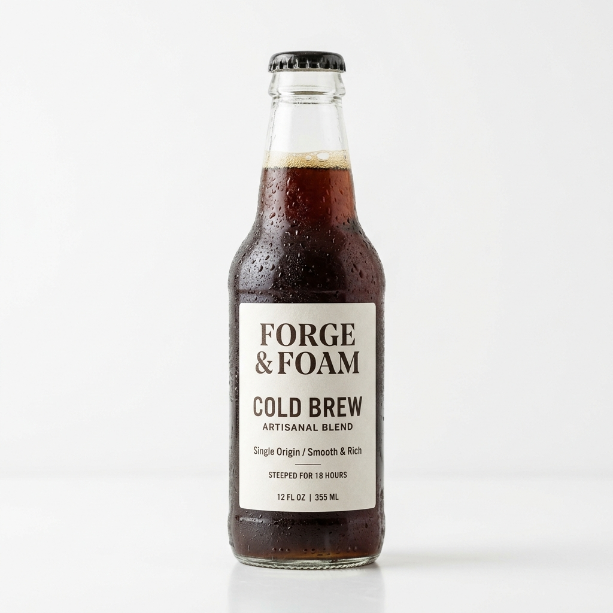

Nuestros Productos
Latte Artesanal
Espresso doble con leche vaporizada a baja temperatura. Arte latte incluido. Sirve caliente o sobre hielo.

Cold Brew Artesanal
Infusión en frío durante 18 horas. Suave, concentrado y sin acidez. Botella de 355 ml lista para llevar.